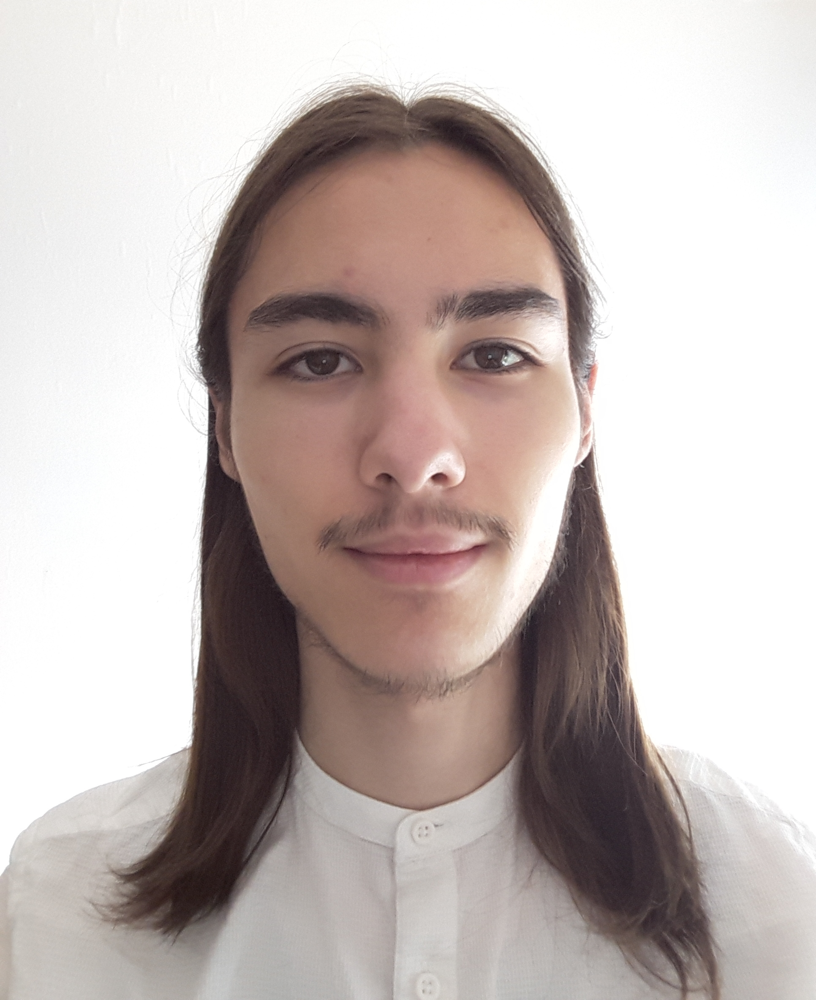

Ik ben Moroni Stubbe. Ik woon in Nieuwerkerk aan den IJssel. Ik heb twee broers en één zus. Mijn opa komt uit
Indonesië.
Op dit moment ben ik een eerstejaarsstudent bij de MBO-opleiding applicatie- en mediaontwikkelaar aan het
Techniek College Rotterdam. Na deze opleiding ben ik van plan om naar het HBO te gaan om daar de studie
informatica te doen. In de tijd dat ik deze opleiding heb gedaan heb ik leren omgaan met verschillende
programmeertalen, namelijk: HTML, CSSm JavaScript, SQL, PHP en C#. Ook heb ik een beetje leren omgaan met
WordPress. Ik ben nog geen expert, maar ben wel van plan dit te worden.